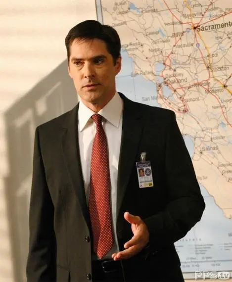
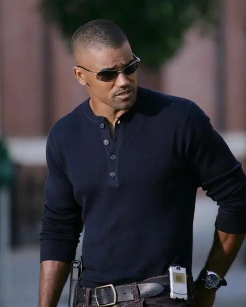

Members'profile of BAU
犯罪心理的主要人物简介


Aaron Hotchner
Aaron为人认真负责,公私分明,正直不阿。尽管作为BAU的行政领导,但他依然坚持让更资深的Gideon来主导侧写工作,而自己只在行政与人员组织工作上体现主管的价值。在上级面前,亚伦能够全力地保护组员,给组员最大的自由发挥空间;在业务方面,他也是足够胜任的。除了出色的侧写能力外,亚伦还擅长审讯与谈判;此外他还是一个神枪手。
Derek Morgan
Morgan是BAU的组员,新人搏击的培训教练,他的专长是角色扮演,他会在犯罪现场或者疑犯家中,从一个罪犯的角度去思考,重现罪犯的一举一动,研究这些举动背后的心理状态。此外,他还是一个柔道黑带选手,近身格斗能力很强。他性格幽默风趣,外形英俊性感,深受女性青睐。
Dr.Spencer Reid
Reid22岁就加入美国联邦调查局(FBI),成为最年轻的高级特别探员,智商高达187,有超常清晰的记忆能力,每分钟能阅读两万字,拥有化学、数学、工程学三个博士学位,心理学、社会学两个学士学位,在修哲学的学士学位。是一个超可爱的小甜心❤。在危险情况下能保持头脑冷静,思维敏捷,善于分析和思考问题,有非凡的洞察力,几乎每次都能最先发现破案的关键。
David Rossi
David Rossi,意大利人,似乎对于足球、烹饪、黑手党都是得心应手。(其专业课程:刑事司法)原是BAU的创始人之一,元老级人物,退休后著书演讲。由于一桩未完成的案子而耿耿于怀,第三季第六集回到BAU发挥余热,并逐渐融入BAU这个大家庭中,在第三季14集中完成夙愿,与Morgen等破获让他牵挂20年的案子。
Jennifer Jareau
JJ是部门对外联络官,同事都喊她JJ。JJ在小组中的地位与作用也是毋庸置疑的,作为小组的对外窗口,她的职责是检阅各地警方送来的案件,从中挑选出最值得重视的案件来让BAU作心理剖析,同时她也是小组与当地警方,媒体接触互动的窗口,必要的时候她还会充当警方的新闻发言人。
Emily Prentiss
Prentiss从耶鲁毕业后加入了FBI,在加入BAU之前工作了十年。作为一个大使的女儿,并且为了完成国际刑警组织的各种任务,Emily去过很多地方。她精通阿拉伯语、西班牙语、意大利语、俄语、希腊语。Emily通过她敏锐的侧写能力以及对工作的奉献精神很好地证明了自己,逐渐地赢得了其他组员的信任与尊敬。她使自己成为了BAU里最值得信赖的和最有能力的探员之一。
Penelope Garcia
Garcia是FBI技术科成员,电脑专家。这位总是在匡蒂科无数电脑屏幕前,为大家提供信息查询,电话跟踪,网络破解等技术帮助的IT高手其实只是一个打扮怪异,花花肠子的小女生,说话风趣幽默。曾因父母车祸双亡从加州理工大学辍学,成为一名黑客,后被FBI聘请。
Jason Gideon